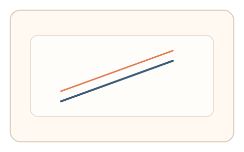
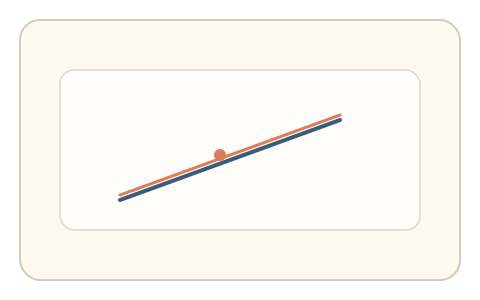

#67
视觉思考范式：Gestalt/对称/频率
已扩展
方向差异阈值
旋转近似平行的线直到看似平行，利用方向 JND 阈值与微调步数验证真实性。
概念原文
两条近似平行的线，用户旋转其中一条直到“看起来平行”。记录最小可辨角度与微调步数。
基于方向 JND 的生理限制而非正确率。
研究背景
方向差异的最小可觉阈（JND）反映人类对角度变化的敏感度，调节过程中的微调节奏具有稳定特征。测量阈值与微调步数可形成行为信号。
核心机制
- 展示两条近似平行的线。
- 用户旋转其中一条直到看似平行。
- 记录最小可辨角度与微调步数。
- 分析方向阈值与调节节奏。
用户流程
- 步骤 1：用户看到两条近似平行线。
- 步骤 2：用户调节角度直到平行。
- 步骤 3：系统记录阈值并判定。
判定信号
最小可辨角度阈值
方向 JND 具有稳定范围。
微调步数与回撤节奏
真实调节通常伴随多次微调。
判定逻辑
评估角度阈值与微调节奏是否落在人类范围；一次到位或异常阈值判异常。
对抗面
- 脚本直接设定角度
- 重放真实用户的调节轨迹
防御与缓解
- 随机化初始角度与线段长度
- 加入轻微噪声与位置抖动
- 叠加微时序与轨迹信号进行多信号判定
可达性与风险
提供键盘微调或替代任务模式，避免对精细操作用户造成负担。
- 小屏设备降低角度感知精度
- 设备输入精度影响调节步数
可视化状态

状态 1：近似平行
两条线存在轻微角度差。

状态 2：角度调节
用户旋转至看似平行。

状态 3：阈值判定
分析角度阈值与微调节奏。
参考资料
Just-noticeable difference
说明方向差异阈值与 JND 概念。
Orientation (geometry)
说明方向与角度感知基础。